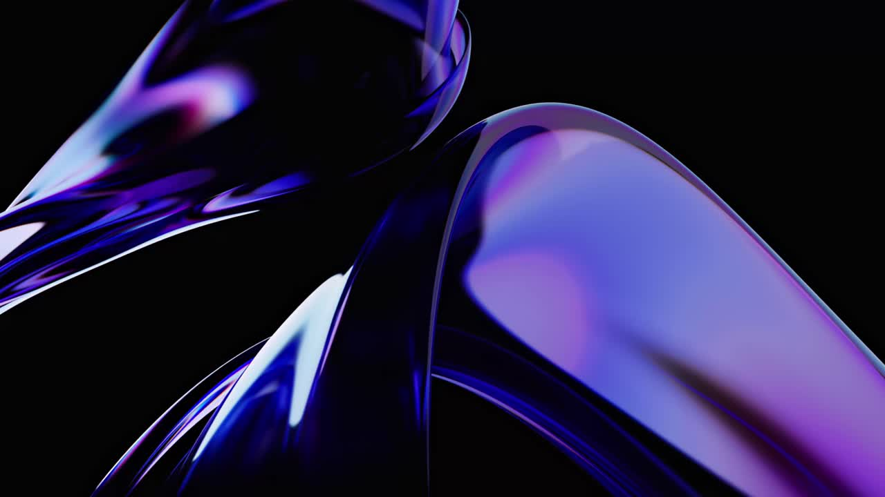
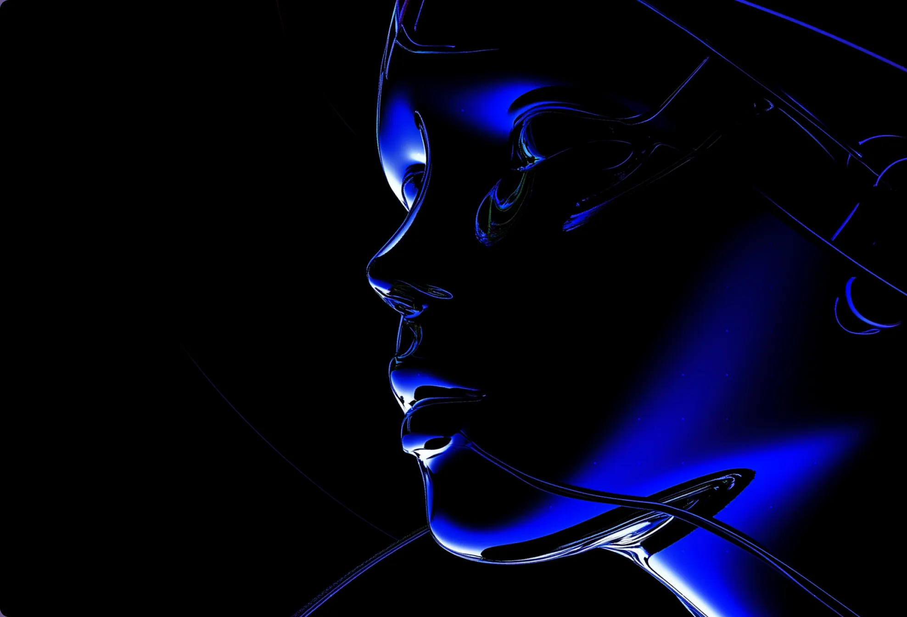
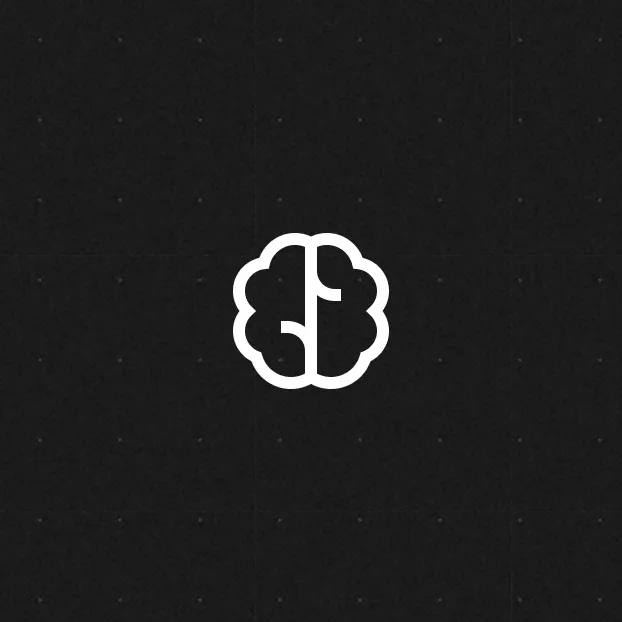
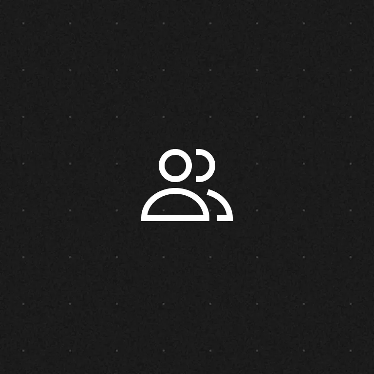
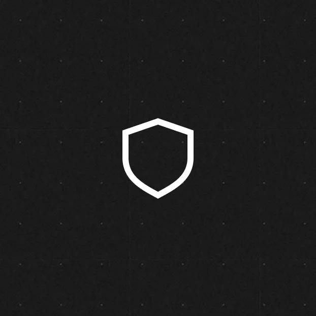

A study in
contrast.
The EverAI visual language, collected from its live website. Original identity, exact colours, expressive type and generous space.

The identity.
A widely spaced wordmark, white lettering and a quiet lilac finish. Preserve the original artwork and its proportions.
Original asset
Transparent raster · 254 × 31px.
Approximate proportion: 8.19:1.
Observed sizing
130px on desktop.
About 110px in the mobile header.
Space to breathe
Recommended clear space: one logo-height on every side.
The stage above uses the collected dark blue as a specimen surface. No vector or light-background wordmark was found in the homepage assets.
Colour with purpose.
Four core colours. The blue belongs to actions; the surrounding black and white give it room to work.
Electric blue
#0428CBPrimary actions
Black
#000000Foundations
White
#FFFFFFType & light surfaces
Ink navy
#080D31Text on white
Deep blue
#00052E · Hero backdrop
Muted on black
White at 70% opacity
Muted on white
#676767 · Supporting text
White on electric blue: 9.67:1 contrast. Keep blue as a button fill, rather than small text on black. Green #A8DE81 is declared in older shared styles but was not active in the measured homepage.
Structure meets expression.
Aspekta provides the structure. A brief Newsreader italic accent softens the headline without changing the overall voice.
Aspekta Variable
Regular 400 · Actions 500–600 · Labels 600
Aa Bb Cc Dd Ee Ff Gg
0123456789
Newsreader Italic
Italic 400 · A short word or phrase
The future.
72px / 110% · 400
40px / 120% · 400
25px / 40px · 400
Thoughtful by design
16px / 162% · 1px tracking
Simple shapes, clear language and space between ideas. Supporting text stays quiet so the headline can lead.
Specimen phrases are illustrative. On mobile, the source uses a 9vw hero size, 24px statements and 20px subheadings. The Markdown reference records the full responsive scale.
Space is part of the brand.
The site uses a broad canvas, compact inner gaps and large pauses between sections. Measurements below come from the live layout.
The measured rhythm
Bars show actual lengths. These are recurring values, not a strict universal grid.
How it adapts
Desktop sections commonly use 170px above and below. Below 992px, this becomes 80px for standard sections, 100px for vision and 115px for careers.
Three service columns become stacked rows. Content keeps a 20px margin on both sides. The hero text area is capped at 700px on desktop.
Diagram is schematic; the annotated widths are measured source values.
Small details. Clear intent.
Pill-shaped actions, understated markers and soft image corners. The surrounding artwork supplies the drama.
15px × 30px padding · 100px radius.
Uppercase labels · 14px desktop text.
Hover to inspect the colour reversal.
10px corners
Images and visual panels

Original feature artwork · Cover crop · 10px radius
Reflective. Sculptural. Electric.
Cobalt light and lilac reflections against deep shadows. These are original site assets, collected without altering the artwork.



Keep the system simple.
Original identity. One vivid accent. Regular-weight type. A short italic moment. Enough space for every idea.
Read the design reference